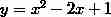
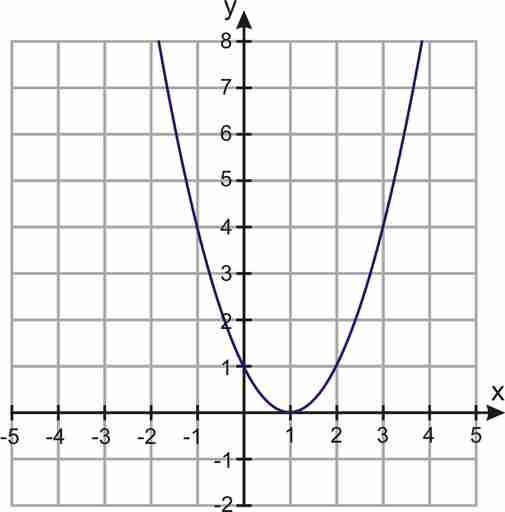
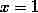
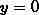
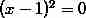
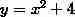
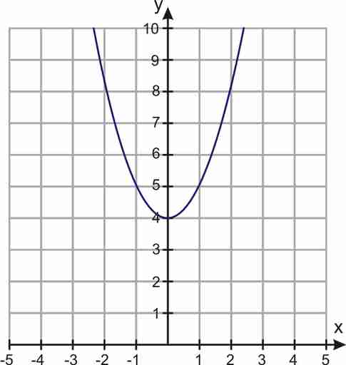
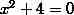

When the graph of a quadratic function crosses the axis at two points, we get two distinct solutions to the quadratic equation.
Case 2: The parabola touches the axis at one point. An example of this is  :

We can see that the graph touches the axis at  .
We can also solve this equation by factoring. If we set  and factor, we obtain  , so . Since the quadratic function is a perfect square, we get only one solution for the equation--it's just the same solution repeated twice over.
When the graph of a quadratic function touches the axis at one point, the quadratic equation has one solution and the solution is called a double root.
Case 3: The parabola does not cross or touch the axis. An example of this is  :

If we set we get  . This quadratic polynomial does not factor.
When the graph of a quadratic function does not cross or touch the axis, the quadratic equation has no real solutions.